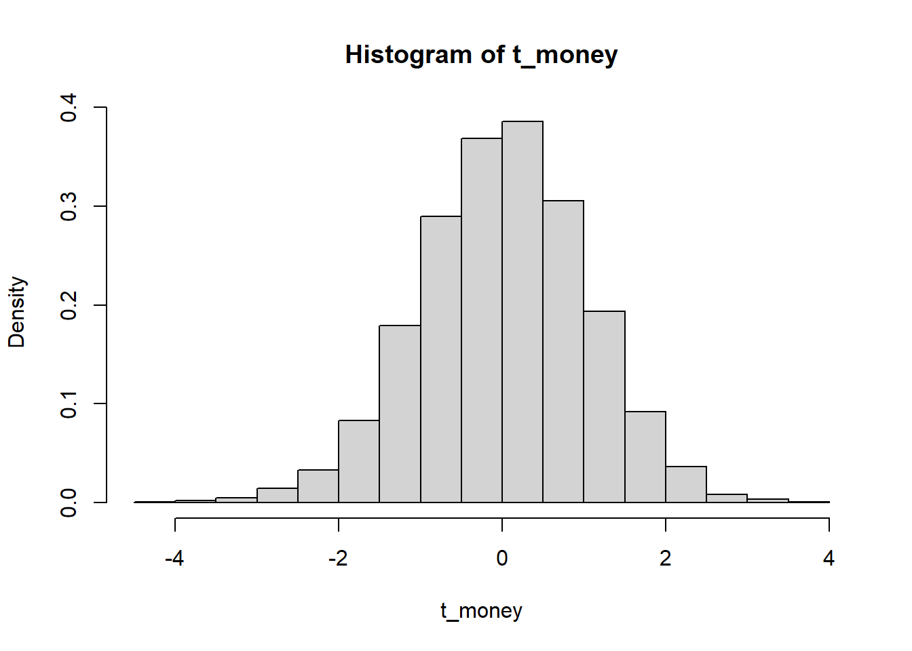
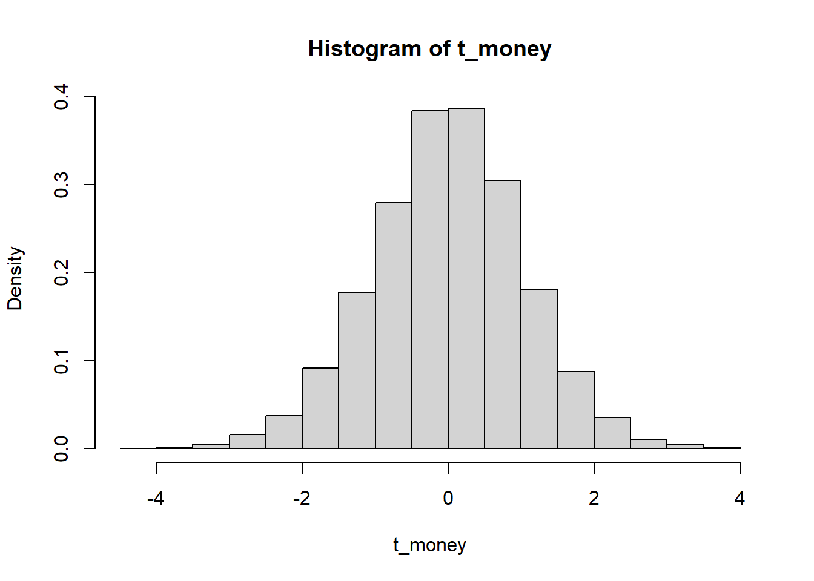
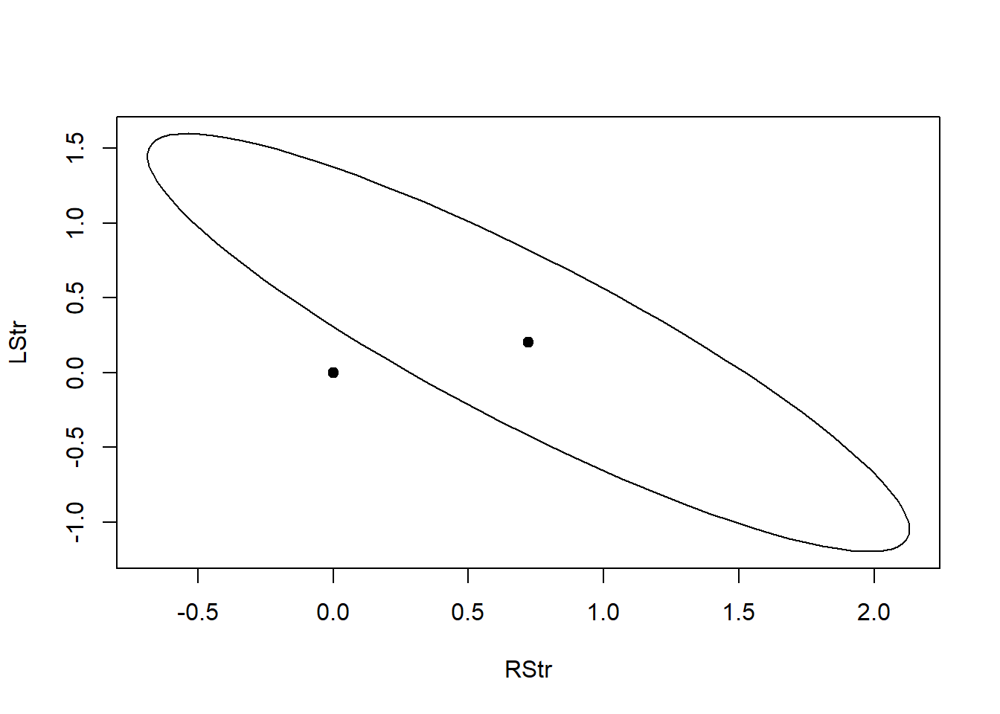

library(faraway)Warning: package 'faraway' was built under R version 4.5.2First we load the faraway package so we have access to the requisite data sets for the homework.
library(faraway)Warning: package 'faraway' was built under R version 4.5.2For this problem, we do excercise 3.4 in LMR. We start by viewing the structure and first few rows of the sat data.
str(sat)'data.frame': 50 obs. of 7 variables:
$ expend: num 4.41 8.96 4.78 4.46 4.99 ...
$ ratio : num 17.2 17.6 19.3 17.1 24 18.4 14.4 16.6 19.1 16.3 ...
$ salary: num 31.1 48 32.2 28.9 41.1 ...
$ takers: int 8 47 27 6 45 29 81 68 48 65 ...
$ verbal: int 491 445 448 482 417 462 431 429 420 406 ...
$ math : int 538 489 496 523 485 518 477 468 469 448 ...
$ total : int 1029 934 944 1005 902 980 908 897 889 854 ...head(sat) expend ratio salary takers verbal math total
Alabama 4.405 17.2 31.144 8 491 538 1029
Alaska 8.963 17.6 47.951 47 445 489 934
Arizona 4.778 19.3 32.175 27 448 496 944
Arkansas 4.459 17.1 28.934 6 482 523 1005
California 4.992 24.0 41.078 45 417 485 902
Colorado 5.443 18.4 34.571 29 462 518 980First we fit a model with total sat score as the response and expend, ratio and salary as predictors.
sat_fit_a <- lm(total ~ expend + ratio + salary, data = sat)
sat_fit_a |> summary()
Call:
lm(formula = total ~ expend + ratio + salary, data = sat)
Residuals:
Min 1Q Median 3Q Max
-140.911 -46.740 -7.535 47.966 123.329
Coefficients:
Estimate Std. Error t value Pr(>|t|)
(Intercept) 1069.234 110.925 9.639 1.29e-12 ***
expend 16.469 22.050 0.747 0.4589
ratio 6.330 6.542 0.968 0.3383
salary -8.823 4.697 -1.878 0.0667 .
---
Signif. codes: 0 '***' 0.001 '**' 0.01 '*' 0.05 '.' 0.1 ' ' 1
Residual standard error: 68.65 on 46 degrees of freedom
Multiple R-squared: 0.2096, Adjusted R-squared: 0.1581
F-statistic: 4.066 on 3 and 46 DF, p-value: 0.01209To test the hypothesis that \[\beta_{salary} = 0\], we start with the following pivotal quantity which has a t distribution with n-p degrees of freedom:
\[\frac{\hat{\beta}_{salary} - \beta_{salary}}{s.e.(\hat{\beta}_{salary})}\] To turn the pivotal quantity into a test statistic, we set \[\beta_{salary} = 0\]. This is our null hypothesis.
Then using the estimate and standard error from the linear model summary output, we have \[t_{obs} = \frac{\hat{\beta}_{salary}}{s.e.(\hat{\beta}_{salary})} = \frac{-8.823}{4.697} = -1.878\].
Finally since our null distribution is \[T \sim t_{n - p}\], we have for a two-sided test that
\[pvalue = 2P(T \ge |t_{obs}|) = 2(1 - P(T < |t_{obs}|))\] which in R is calculated as 2*(1-pt(1.878, 46)) since n-p is 46.
2*(1-pt(1.878, 46))[1] 0.06672883We see this p-value matches that given in the summary output for the linear model. At the 0.05 significance level, we fail to reject the null hypothesis that \[\beta_{salary} = 0\], since the p-value is greater than 0.05. Thus we do NOT have evidence to reject the claim that \[\beta_{salary} = 0\].
Next we test the null hypothesis that \[\beta_{salary} = \beta_{ratio} = \beta_{expend} = 0\] versus the alternative hypothesis that at least one beta coefficient is non-zero. The test statistic for this test is \[F_{obs} = \frac{MSR}{MSE} = 4.066\], the last equality following from the output of the summary of our linear model that we fit above. The null distribution for the test is an F distribution with p-1 and n-p degrees of freedom, so if \[F \sim F_{p-1,n-p}\], then the p-value for the test is given by \[pvalue = P(F \ge F_{obs}) = 1 - P(F < F_{obs})\]. In R code, we can calculate this as follows:
1-pf(4.066, 3, 46)[1] 0.01208878We see this p-value matches that from the summary output for our linear model fit above. At the 0.05 significance level, we reject the null hypothesis that \[\beta_{salary} = \beta_{ratio} = \beta_{expend} = 0\], meaning we have evidence that at least one beta parameter is non-zero.
However, when we look at the p-values for the individual predictors, we see that at the 0.05 significance level, we do not have evidence that any of the beta parameters are non-zero for any of the predictors, suggesting that none of the predictors have an effect on the response. How is this congruent with the results of the F-test? This is addressed in the Student-to-Student discussion on the Moodle page. It is a consequence of high correlation between the predictors.
Now we add takers to the model from part (a).
sat_fit_b <- lm(total ~ expend + ratio + salary + takers, data = sat)
sat_fit_b |> summary()
Call:
lm(formula = total ~ expend + ratio + salary + takers, data = sat)
Residuals:
Min 1Q Median 3Q Max
-90.531 -20.855 -1.746 15.979 66.571
Coefficients:
Estimate Std. Error t value Pr(>|t|)
(Intercept) 1045.9715 52.8698 19.784 < 2e-16 ***
expend 4.4626 10.5465 0.423 0.674
ratio -3.6242 3.2154 -1.127 0.266
salary 1.6379 2.3872 0.686 0.496
takers -2.9045 0.2313 -12.559 2.61e-16 ***
---
Signif. codes: 0 '***' 0.001 '**' 0.01 '*' 0.05 '.' 0.1 ' ' 1
Residual standard error: 32.7 on 45 degrees of freedom
Multiple R-squared: 0.8246, Adjusted R-squared: 0.809
F-statistic: 52.88 on 4 and 45 DF, p-value: < 2.2e-16Now we want to test the null hypothesis that \[\beta_{takers} = 0\], versus the alternative hypothesis that \[\beta_{takers} \ne 0\]. We could show our work the same as we did in part (a), but since we have already shown the work once, we will just use the output from the summary. We see that the p-value for takers is 2.61e-16, which is much less than 0.05. Thus at the 0.05 significance level we reject the null hypothesis of \[\beta_{takers} = 0\]. Hence we have evidence at the 0.05 significance level that \[\beta_{takers} \ne 0\].
Next we wish to compare this model to the model in part (a) using an F-test. The null hypothesis is that the model in part (a), the reduced model, explains the same amount of variability in the response as the model in part (b) (the full model) does. Let \[SSE_{k}\] denote the sum of squared errors for model k, where k takes value a for the reduced model and b for the full model. Then our test statistic is \[F_{obs} = \frac{\frac{SSE_a - SSE_b}{q}}{\frac{SSE_b}{n - p}}\], where q is the difference in dimension between the two models, which is q=1 in this case, and n and p are chosen from the full model. We calculate the value of the F-statistic:
SSE_a <- t(sat_fit_a$residuals)%*%sat_fit_a$residuals
SSE_b <- t(sat_fit_b$residuals)%*%sat_fit_b$residuals
F_obs <- ((SSE_a - SSE_b)/1)/(SSE_b/45)
F_obs [,1]
[1,] 157.7379Then since the null distribution is \[F \sim F_{q,n - p}\], where q=1 and n-p=45, the p-value for the test is \[pvalue = P(F \ge F_{obs}) = 1 - P(F < F_{obs})\]. We calculate this as follows:
1-pf(157.74, 1, 45)[1] 2.220446e-16We can compare our results with the output of an F-test using R code:
anova(sat_fit_a, sat_fit_b)Analysis of Variance Table
Model 1: total ~ expend + ratio + salary
Model 2: total ~ expend + ratio + salary + takers
Res.Df RSS Df Sum of Sq F Pr(>F)
1 46 216812
2 45 48124 1 168688 157.74 2.607e-16 ***
---
Signif. codes: 0 '***' 0.001 '**' 0.01 '*' 0.05 '.' 0.1 ' ' 1We see that our calculated F-statistic matches that provided in the table. Our calculated p-value is very close to that provided in the table, the tiny difference likely being related to how the anova function is handling rounding. Since the p-value is much less than 0.05, we have evidence against the null hypothesis at the 0.05 significance level. That is, we have evidence that the full model in part (b) explains more of the variability in the response than the reduced model in part (a) does.
Finally, to demonstrate the equivalence of the F-test and t-test in this case, note that the t-statistic of -12.559 from the full model, when squared, equals (roughly, due to rounding) the F-statistic of 157.74. As discussed in the lecture, this is in general the case when the reduced model is formed by putting exactly one \[\beta_{k} = 0\].
For this problem, we do exercise 3.6 in LMR. We use the happy data set. We start by viewing its structure and first few rows.
str(happy)'data.frame': 39 obs. of 5 variables:
$ happy: num 10 8 8 8 4 9 8 6 5 4 ...
$ money: num 36 47 53 35 88 175 175 45 35 55 ...
$ sex : num 0 1 0 1 1 1 1 0 1 1 ...
$ love : num 3 3 3 3 1 3 3 2 2 1 ...
$ work : num 4 1 5 3 2 4 4 3 2 4 ...head(happy) happy money sex love work
1 10 36 0 3 4
2 8 47 1 3 1
3 8 53 0 3 5
4 8 35 1 3 3
5 4 88 1 1 2
6 9 175 1 3 4Now we fit a regression model with happy as the response and the other four variables as predictors.
lm_fit_happy <- lm(happy ~., data = happy)
lm_fit_happy |> summary()
Call:
lm(formula = happy ~ ., data = happy)
Residuals:
Min 1Q Median 3Q Max
-2.7186 -0.5779 -0.1172 0.6340 2.0651
Coefficients:
Estimate Std. Error t value Pr(>|t|)
(Intercept) -0.072081 0.852543 -0.085 0.9331
money 0.009578 0.005213 1.837 0.0749 .
sex -0.149008 0.418525 -0.356 0.7240
love 1.919279 0.295451 6.496 1.97e-07 ***
work 0.476079 0.199389 2.388 0.0227 *
---
Signif. codes: 0 '***' 0.001 '**' 0.01 '*' 0.05 '.' 0.1 ' ' 1
Residual standard error: 1.058 on 34 degrees of freedom
Multiple R-squared: 0.7102, Adjusted R-squared: 0.6761
F-statistic: 20.83 on 4 and 34 DF, p-value: 9.364e-09We see from the summary output that love and work are the significant predictors at the 1% level.
Now we use the table function to produce a numerical summary of the response.
table(happy$happy)
2 3 4 5 6 7 8 9 10
1 1 4 5 2 8 14 3 1 We see there are more values at the high end of the happiness scale. In other words, the distribution is left-skewed. So the assumption that the response is normally distributed is questionable. And the response not being normally distributed implies the errors are not normally distributed. This follows from the logically equivalent contrapositive statement that normally distributed errors implies normally distributed response, which we showed in lecture. Thus the assumption of normality of errors, which is needed for a valid t-test, is violated.
Now we use the permutation test to test the significance of the money predictor.
###Set seed for reproducibility
set.seed(12345)
###Specify number of permutations to be done
n = 10000
### Initialize vectors to store null values t-statistics
t_money <- rep(NA, n)
### Calculate null values of t-statistic by permuting the money predictor and update the above vector
for (i in 1:n){
lm_fit <- lm(happy ~ sample(money) + sex + love + work, data = happy)
t_money[i] <- summary(lm_fit)$coefficients[2,3]
}
###calculate the p-value
mean(t_money > summary(lm_fit_happy)$coefficients[2,3])[1] 0.0349We see that our p-value from the permutation test is less than 0.05, so we reject the null hypothesis \[\beta_{money} = 0\]. That is, at the 0.05 significance level, we DO have evidence that the money predictor has a relationship with happiness, in the presence of the other predictors sex, love, and work.
Here we plot a histogram of the permutation t-statistics.
hist(t_money, freq = FALSE)
Here we overlay a t-density over the histogram. Note n=39 and p-1=4, so n-p = 39-5 = 34
grid <- seq(-3, 3, length = 300)
hist(t_money, freq = FALSE)
lines(grid, dt(grid, 34))
We see that the empirical distribution of the t-statistic matches reasonably well with the expected null distribution, which is a t-distribution with 34 degrees of freedom.
Now we use a nonparametric bootstrap procedure to determine the 90% and 95% confidence intervals for \[\beta_{money}\].
###set number of bootstrap resamples
B <- 10000
# Initialize a vector to store bootstrap estimates for beta_money
beta_money_boot <- rep(NA, B)
# create bootstrap resample estimates for beta_money and update the above vector
for (i in 1:B){
resampled_residuals <- sample(lm_fit_happy$residuals, replace = TRUE)
y_boot <- lm_fit_happy$fitted.values + resampled_residuals
lm_fit <- lm(y_boot ~., data = happy)
beta_money_boot[i] <- lm_fit$coefficients['money']
}
# determine 90% CI
CI_90_boot <- quantile(beta_money_boot, c(0.05, 0.95))
# determine 95% CI
CI_95_boot <- quantile(beta_money_boot, c(0.025, 0.975))
#print
CI_90_boot 5% 95%
0.001081423 0.017755523 CI_95_boot 2.5% 97.5%
-0.0005412209 0.0193282482 We can compare this with the 90% and 95% CIs obtained from t-test.
CI_90_t <- confint(lm_fit_happy, level = 0.9)[2,]
CI_95_t <- confint(lm_fit_happy)[2,]
CI_90_boot 5% 95%
0.001081423 0.017755523 CI_90_t 5 % 95 %
0.000763349 0.018392799 CI_95_boot 2.5% 97.5%
-0.0005412209 0.0193282482 CI_95_t 2.5 % 97.5 %
-0.001015941 0.020172088 We see the intervals obtained from t-test are similar to those obtained with the bootstrap, with the bootstrap intervals being slightly narrower, as was the case for the examples in the lecture.
The null value \[\beta_{money} = 0\] doesn’t fall in the 90% CI, so we reject the null at the 90% significance level. However, the null value of 0 does fall in the 95% CI, so we fail to reject the null at the 95% significance level. This is the case for both the bootstrap interval estimate and t-test interval estimate.
This is incongruent with the permutation test results, for which we had evidence to reject the null hypothesis \[\beta_{money} = 0\].
Here we do exercise 3.7 in LMR. We are using the punting data. We start by viewing the structure of the data set and the first few rows.
str(punting)'data.frame': 13 obs. of 7 variables:
$ Distance: num 162 144 148 164 192 ...
$ Hang : num 4.75 4.07 4.04 4.18 4.35 4.16 4.43 3.2 3.02 3.64 ...
$ RStr : int 170 140 180 160 170 150 170 110 120 130 ...
$ LStr : int 170 130 170 160 150 150 180 110 110 120 ...
$ RFlex : int 106 92 93 103 104 101 108 86 90 85 ...
$ LFlex : int 106 93 78 93 93 87 106 92 86 80 ...
$ OStr : num 241 195 153 197 267 ...head(punting) Distance Hang RStr LStr RFlex LFlex OStr
1 162.50 4.75 170 170 106 106 240.57
2 144.00 4.07 140 130 92 93 195.49
3 147.50 4.04 180 170 93 78 152.99
4 163.50 4.18 160 160 103 93 197.09
5 192.00 4.35 170 150 104 93 266.56
6 171.75 4.16 150 150 101 87 260.56We fit a regression model with Distance as the response and right and left leg strength and flexibility as predictors.
lm_fit_punting <- lm(Distance ~ RStr + LStr + RFlex + LFlex, data = punting)
lm_fit_punting |> summary()
Call:
lm(formula = Distance ~ RStr + LStr + RFlex + LFlex, data = punting)
Residuals:
Min 1Q Median 3Q Max
-23.941 -8.958 -4.441 13.523 17.016
Coefficients:
Estimate Std. Error t value Pr(>|t|)
(Intercept) -79.6236 65.5935 -1.214 0.259
RStr 0.5116 0.4856 1.054 0.323
LStr -0.1862 0.5130 -0.363 0.726
RFlex 2.3745 1.4374 1.652 0.137
LFlex -0.5277 0.8255 -0.639 0.541
Residual standard error: 16.33 on 8 degrees of freedom
Multiple R-squared: 0.7365, Adjusted R-squared: 0.6047
F-statistic: 5.59 on 4 and 8 DF, p-value: 0.01902We see from the output that at the 5% significance level, none of the predictors are significant (all of their p-values exceed 0.05).
To do an F-test, we have the null hypothesis \[\beta_{RStr} = \beta_{LStr} = \beta_{RFlex} = \beta_{LFlex} = 0\] versus the alternative hypothesis that at least one beta parameter is non-zero. Our F-statistic is then \[F_{obs} = \frac{MSR}{MSE} = 5.59\], the latter equality coming from the output from the model summary above. Now the null distribution is \[F \sim F_{p - 1, n - p}\], where in this case n is 13 and p-1 = 4, so p = 5. So our p-value is \[p = P(F \ge F_{obs}) = 1 - P(F < F_{obs})\], which we calculate in R as follows:
1-pf(5.59, 4, 8)[1] 0.01902427We see this p-value matches that provided for the F-test in the summary output above. Since the p-value is less than 0.05, we reject the null hypothesis at the 5% significance level. That is, we have evidence that at least one beta parameter is non-zero (or alternatively, that collectively these 4 parameters have a relationship with the response).
However, note that none of the predictors are individually significant at the 5% level, as we noted above. This is a situation analogous to that discussed in problem 1 and is a consequence of the correlation between the predictor variables.
For this part, we test whether relative to the model in (a), a model with right and left leg strengths has the same effect. The full construction of this kind of test was shown in problem 1 part (b). So we will not show it again (see that problem for details) but rather will use the output from the anova function. First we fit the reduced model, and then we conduct the general F-test using the anova function.
lm_fit_reduced_c <- lm(Distance ~ RStr + LStr, data = punting)
anova(lm_fit_reduced_c, lm_fit_punting)Analysis of Variance Table
Model 1: Distance ~ RStr + LStr
Model 2: Distance ~ RStr + LStr + RFlex + LFlex
Res.Df RSS Df Sum of Sq F Pr(>F)
1 10 2973.1
2 8 2132.6 2 840.43 1.5763 0.2648The null hypothesis for this test is that the reduced model explains the same amount of variability in the response variable Distance as the full model does. Our p-value is 0.2648, so since this exceeds 0.05, we do not have enough evidence to reject the null hypothesis. That is, we do not have evidence that the full model (from part (a)) explains more variability in the response than the reduced model does.
Now we construct a 95% confidence region for \[\beta = (\beta_{RStr}, \beta_{LStr})\]. This region is the set of all \[\beta\] satisfying \[\frac{(\hat{\beta} - \beta)^T(X^TX)(\hat{\beta} - \beta)}{p\hat{\sigma}^2} \le F_{1 - \alpha, p, n - p}\]. To visualize this region, we use the ellipse package.
library(ellipse)Warning: package 'ellipse' was built under R version 4.5.2
Attaching package: 'ellipse'The following object is masked from 'package:graphics':
pairsplot(ellipse(lm_fit_reduced_c, c(2,3)), type = 'l')
points(coef(lm_fit_reduced_c)[2], coef(lm_fit_reduced_c)[3], pch = 19)
points(0,0, pch = 19)
The confidence region represents a range of plausible values for \[\beta = (\beta_{RStr}, \beta_{LStr})\]. In the reduced model from part (c), we tested the null hypothesis that \[\beta = (\beta_{RStr}, \beta_{LStr}) = (0, 0)\]. So we reject the null with that F-test if and only if the null value \[\beta = (\beta_{RStr}, \beta_{LStr}) = (0, 0)\] falls outside the 95% confidence region described here. We see that the null value of (0,0) lies outside the confidence ellipse. Therefore we reject the null hypothesis at the 5% significance level based on the 95% confidence region. Compare this with the reduced model from part (c).
lm_fit_reduced_c |> summary()
Call:
lm(formula = Distance ~ RStr + LStr, data = punting)
Residuals:
Min 1Q Median 3Q Max
-29.280 -9.583 3.147 10.266 26.450
Coefficients:
Estimate Std. Error t value Pr(>|t|)
(Intercept) 12.8490 33.0334 0.389 0.705
RStr 0.7208 0.4913 1.467 0.173
LStr 0.2011 0.4883 0.412 0.689
Residual standard error: 17.24 on 10 degrees of freedom
Multiple R-squared: 0.6327, Adjusted R-squared: 0.5592
F-statistic: 8.611 on 2 and 10 DF, p-value: 0.00669We reject the null based on this as well, since the p-value for the F-test is less than 0.05. We see that the two approaches are congruent, as expected.
Next we fit a model to test the hypothesis that it is total leg strength defined by adding the right and left leg strengths that is sufficient to predict the response in comparison to using individual left and right leg strengths. The individual model has the form \[Distance = \beta_o + \beta_{RStr}(RStr) + \beta_{LStr}(LStr) + \epsilon\]. The the total leg strength model is a reduced form of the individual model with \[\beta_{RStr} = \beta_{LStr} = \beta\]. Then the null hypothesis is that our reduced model (total leg strength model) explains the same amount of variability in the response as the full model (individual leg model). To conduct the test, we fit the reduced model and use the anova function.
lm_fit_reduced_e <- lm(Distance ~ I(RStr + LStr), data = punting)
lm_fit_reduced_e |> summary()
Call:
lm(formula = Distance ~ I(RStr + LStr), data = punting)
Residuals:
Min 1Q Median 3Q Max
-27.632 -11.531 2.171 8.443 30.672
Coefficients:
Estimate Std. Error t value Pr(>|t|)
(Intercept) 14.0936 31.8838 0.442 0.66703
I(RStr + LStr) 0.4601 0.1082 4.252 0.00136 **
---
Signif. codes: 0 '***' 0.001 '**' 0.01 '*' 0.05 '.' 0.1 ' ' 1
Residual standard error: 16.68 on 11 degrees of freedom
Multiple R-squared: 0.6217, Adjusted R-squared: 0.5874
F-statistic: 18.08 on 1 and 11 DF, p-value: 0.001361anova(lm_fit_reduced_e, lm_fit_reduced_c)Analysis of Variance Table
Model 1: Distance ~ I(RStr + LStr)
Model 2: Distance ~ RStr + LStr
Res.Df RSS Df Sum of Sq F Pr(>F)
1 11 3061.3
2 10 2973.1 1 88.281 0.2969 0.5978We get a p-value (0.5978) for this general F-test much larger than 0.05 so we fail to reject the null hypothesis at the 5% significance level. That is, we do NOT have evidence that the model with individual leg strengths as predictors explains more variability in the response than the model which considers only the sum of the left and right leg strengths.
In this part, we test whether the right and left leg flexibilities have the same effect relative to the model in (a). This is again done by general F-test as we have done several times already in this assignment. The null hypothesis is that the reduced model, which only considers right and left leg flexibilities, explains the same amount of variance in the response variable Distance as the full model (which considers right and left leg strengths as well as right and left leg flexibilities). To carry out this test, we again fit the reduced model and then use the anova function.
lm_fit_reduced_f <- lm(Distance ~ RFlex + LFlex, data = punting)
lm_fit_reduced_f |> summary()
Call:
lm(formula = Distance ~ RFlex + LFlex, data = punting)
Residuals:
Min 1Q Median 3Q Max
-28.048 -7.601 -3.076 9.601 22.474
Coefficients:
Estimate Std. Error t value Pr(>|t|)
(Intercept) -92.9547 57.7699 -1.609 0.13868
RFlex 3.3366 0.8074 4.132 0.00204 **
LFlex -0.8560 0.7338 -1.167 0.27045
---
Signif. codes: 0 '***' 0.001 '**' 0.01 '*' 0.05 '.' 0.1 ' ' 1
Residual standard error: 15.79 on 10 degrees of freedom
Multiple R-squared: 0.6921, Adjusted R-squared: 0.6305
F-statistic: 11.24 on 2 and 10 DF, p-value: 0.002768anova(lm_fit_reduced_f, lm_fit_punting)Analysis of Variance Table
Model 1: Distance ~ RFlex + LFlex
Model 2: Distance ~ RStr + LStr + RFlex + LFlex
Res.Df RSS Df Sum of Sq F Pr(>F)
1 10 2492.1
2 8 2132.6 2 359.46 0.6742 0.5363We get a p-value of 0.5363 for this general F-test, which is much larger than 0.05. Thus at the 5% significance level, we fail to reject the null hypothesis. That is, we do NOT have evidence that the full model in part (a) explains more variability in the response variable Distance than the reduced model does (which considers only right and left leg flexibilities).
Here we fit a model with Hang as the response and the same four predictors.
lm_fit_punting_hang <- lm(Hang ~ RStr + LStr + RFlex + LFlex, data = punting)
lm_fit_punting_hang |> summary()
Call:
lm(formula = Hang ~ RStr + LStr + RFlex + LFlex, data = punting)
Residuals:
Min 1Q Median 3Q Max
-0.36297 -0.13528 -0.07849 0.09938 0.35893
Coefficients:
Estimate Std. Error t value Pr(>|t|)
(Intercept) -0.225239 1.032784 -0.218 0.833
RStr 0.005153 0.007645 0.674 0.519
LStr 0.007697 0.008077 0.953 0.369
RFlex 0.019404 0.022631 0.857 0.416
LFlex 0.004614 0.012998 0.355 0.732
Residual standard error: 0.2571 on 8 degrees of freedom
Multiple R-squared: 0.8156, Adjusted R-squared: 0.7235
F-statistic: 8.848 on 4 and 8 DF, p-value: 0.004925We have not discussed a test which allows us to compare this model to that in (a). The general F-test assumes one model in the comparison is a nested model of the other and has the same response variable. If we compare this model to that in (a), we have different response variables.
For this problem we do exercise 4.1 in LMR. For this question we use the prostate data. We start by viewing the structure of the data set and the first few rows.
str(prostate)'data.frame': 97 obs. of 9 variables:
$ lcavol : num -0.58 -0.994 -0.511 -1.204 0.751 ...
$ lweight: num 2.77 3.32 2.69 3.28 3.43 ...
$ age : int 50 58 74 58 62 50 64 58 47 63 ...
$ lbph : num -1.39 -1.39 -1.39 -1.39 -1.39 ...
$ svi : int 0 0 0 0 0 0 0 0 0 0 ...
$ lcp : num -1.39 -1.39 -1.39 -1.39 -1.39 ...
$ gleason: int 6 6 7 6 6 6 6 6 6 6 ...
$ pgg45 : int 0 0 20 0 0 0 0 0 0 0 ...
$ lpsa : num -0.431 -0.163 -0.163 -0.163 0.372 ...head(prostate) lcavol lweight age lbph svi lcp gleason pgg45 lpsa
1 -0.5798185 2.7695 50 -1.386294 0 -1.38629 6 0 -0.43078
2 -0.9942523 3.3196 58 -1.386294 0 -1.38629 6 0 -0.16252
3 -0.5108256 2.6912 74 -1.386294 0 -1.38629 7 20 -0.16252
4 -1.2039728 3.2828 58 -1.386294 0 -1.38629 6 0 -0.16252
5 0.7514161 3.4324 62 -1.386294 0 -1.38629 6 0 0.37156
6 -1.0498221 3.2288 50 -1.386294 0 -1.38629 6 0 0.76547Now we fit a model with lpsa as the response and the other variables as predictors.
lm_fit_prostate <- lm(lpsa ~., data = prostate)
lm_fit_prostate |> summary()
Call:
lm(formula = lpsa ~ ., data = prostate)
Residuals:
Min 1Q Median 3Q Max
-1.7331 -0.3713 -0.0170 0.4141 1.6381
Coefficients:
Estimate Std. Error t value Pr(>|t|)
(Intercept) 0.669337 1.296387 0.516 0.60693
lcavol 0.587022 0.087920 6.677 2.11e-09 ***
lweight 0.454467 0.170012 2.673 0.00896 **
age -0.019637 0.011173 -1.758 0.08229 .
lbph 0.107054 0.058449 1.832 0.07040 .
svi 0.766157 0.244309 3.136 0.00233 **
lcp -0.105474 0.091013 -1.159 0.24964
gleason 0.045142 0.157465 0.287 0.77503
pgg45 0.004525 0.004421 1.024 0.30886
---
Signif. codes: 0 '***' 0.001 '**' 0.01 '*' 0.05 '.' 0.1 ' ' 1
Residual standard error: 0.7084 on 88 degrees of freedom
Multiple R-squared: 0.6548, Adjusted R-squared: 0.6234
F-statistic: 20.86 on 8 and 88 DF, p-value: < 2.2e-16For this part, we are given the values for a new patient. We store them in a data frame.
new_data <- data.frame('lcavol' = 1.44692, 'lweight' = 3.62301, 'age' = 65.00000, 'lbph' = 0.30010, 'svi' = 0.00000, 'lcp' = -0.79851, 'gleason' = 7.00000, 'pgg45' = 15.00000)Let \[c^* = (1, lcavol^*, lweight^*, ..., pgg45^*)^T\], where the * represents the value of a predictor for the new patient, and \[\hat{\beta}\] is the p-vector of estimates for the coefficients of the model. Then our point estimate for lpsa for this new patient is \[\hat{Y}^* = (c^*)^T\hat{\beta}\]. We calculate this with the predict function:
predict(lm_fit_prostate, newdata = new_data) 1
2.389053 So the predicted lpsa for this patient is 2.389053. Now we estimate the 95% CI of the predicted lpsa for this patient, which is commonly called the prediction interval. The formula for this interval is based on the distribution of the following pivotal quantity \[\frac{\hat{Y}^* - Y^*}
{\hat{\sigma}[1 + (c^*)^T(X^TX)^-1(c^*)]} \sim t_{n - p}\]. From this distribution we can determine the 95% CI (prediction interval). We can calculate it with the predict function.
predict(lm_fit_prostate, newdata = new_data, interval = 'prediction', level = 0.95) fit lwr upr
1 2.389053 0.9646584 3.813447So the 95% CI/prediction interval for the new value is (0.9646584, 3.813447).
Now we repeat the last question for a patient with the same values except that he is age 20. First we update the new_data data frame and then we recalculate the point and interval estimates.
new_data_updated <- new_data
new_data_updated$age <- 20
predict(lm_fit_prostate, newdata = new_data_updated, interval = 'prediction', level = 0.95) fit lwr upr
1 3.272726 1.538744 5.006707The confidence interval is wider because an age of 20 is further from the mean age (63.86598) than the original age of 65 is. This leads to more variability in the response variable so the prediction interval is wider.
Now we take the model and remove all the predictors that are not significant at the 5% level.
lm_fit_prostate |> summary()
Call:
lm(formula = lpsa ~ ., data = prostate)
Residuals:
Min 1Q Median 3Q Max
-1.7331 -0.3713 -0.0170 0.4141 1.6381
Coefficients:
Estimate Std. Error t value Pr(>|t|)
(Intercept) 0.669337 1.296387 0.516 0.60693
lcavol 0.587022 0.087920 6.677 2.11e-09 ***
lweight 0.454467 0.170012 2.673 0.00896 **
age -0.019637 0.011173 -1.758 0.08229 .
lbph 0.107054 0.058449 1.832 0.07040 .
svi 0.766157 0.244309 3.136 0.00233 **
lcp -0.105474 0.091013 -1.159 0.24964
gleason 0.045142 0.157465 0.287 0.77503
pgg45 0.004525 0.004421 1.024 0.30886
---
Signif. codes: 0 '***' 0.001 '**' 0.01 '*' 0.05 '.' 0.1 ' ' 1
Residual standard error: 0.7084 on 88 degrees of freedom
Multiple R-squared: 0.6548, Adjusted R-squared: 0.6234
F-statistic: 20.86 on 8 and 88 DF, p-value: < 2.2e-16The predictors which are significant at the 5% level are lcavol, lweight, and svi, so we refit the model with only these predictors.
lm_fit_prostate_refit <- lm(lpsa ~ lcavol + lweight + svi, data = prostate)
lm_fit_prostate_refit |> summary()
Call:
lm(formula = lpsa ~ lcavol + lweight + svi, data = prostate)
Residuals:
Min 1Q Median 3Q Max
-1.72964 -0.45764 0.02812 0.46403 1.57013
Coefficients:
Estimate Std. Error t value Pr(>|t|)
(Intercept) -0.26809 0.54350 -0.493 0.62298
lcavol 0.55164 0.07467 7.388 6.3e-11 ***
lweight 0.50854 0.15017 3.386 0.00104 **
svi 0.66616 0.20978 3.176 0.00203 **
---
Signif. codes: 0 '***' 0.001 '**' 0.01 '*' 0.05 '.' 0.1 ' ' 1
Residual standard error: 0.7168 on 93 degrees of freedom
Multiple R-squared: 0.6264, Adjusted R-squared: 0.6144
F-statistic: 51.99 on 3 and 93 DF, p-value: < 2.2e-16Now we use the new model to recompute the predictions of the previous question. It doesn’t matter which age we use since age is not a predictor in the model.
predict(lm_fit_prostate_refit, newdata = new_data, interval = 'prediction', level = 0.95) fit lwr upr
1 2.372534 0.9383436 3.806724The width of the confidence interval is 3.806724 - 0.9383436 = 2.8683804.
Compare this with the original models where the width of the confidence intervals were 3.813447 - 0.9646584 = 2.8487886 (part (a)) and 5.006707 - 1.538744 = 3.467963.
The CI of the reduced model is very slightly wider than that for the prediction made by the full model using age 65, but the CI of the reduced model is quite smaller than the CI for the prediction made by the full model using age 65. Thus from this perspective, the reduced model may be preferable. However, we may lose valuable prediction information. An F-test would be enlightening to compare the models.
To get this problem started, we first need run the code to create the function ftest. This is copied from the Moodle page.
ftest = function(model, A, b = 0)
# General linear test of H0: A beta = b
# model is the fitted model under H1
# A needs to be of full rank
{
BetaHat = coef(model)
dimA = dim(A)
if(length(BetaHat) != dimA[2]) stop("Sizes of A and Beta are incompatible")
q = dimA[1]
if(qr(A)$rank != q) stop("Rows of A must be linearly independent.")
out = numeric(4)
names(out) = c("F","df1","df2","p-value")
dfe = df.residual(model)
diff = A%*%BetaHat - b
fstat = t(diff) %*% solve(A%*%vcov(model)%*%t(A)) %*% diff / q
# Note vcov = MSE * XtXinv
fstat = as.numeric(fstat)
out[1] = fstat
out[2] = q
out[3] = dfe
out[4] = 1 - pf(fstat, q, dfe)
return(out)
} # End of function ftestHere we conduct the overall F-test. The null hypothesis is \[\beta_{status} = \beta_{income} = \beta_{verbal} = 0\], and the alternative hypothesis is that at least one beta parameter is nonzero. We fit the model.
lm_fit_gamble <- lm(gamble ~ status + income + verbal, data=teengamb)
lm_fit_gamble |> summary()
Call:
lm(formula = gamble ~ status + income + verbal, data = teengamb)
Residuals:
Min 1Q Median 3Q Max
-49.649 -12.008 -1.242 8.239 103.390
Coefficients:
Estimate Std. Error t value Pr(>|t|)
(Intercept) -1.3044 15.7760 -0.083 0.9345
status 0.4701 0.2509 1.873 0.0678 .
income 5.7707 1.0494 5.499 1.95e-06 ***
verbal -4.1211 2.2785 -1.809 0.0775 .
---
Signif. codes: 0 '***' 0.001 '**' 0.01 '*' 0.05 '.' 0.1 ' ' 1
Residual standard error: 24.28 on 43 degrees of freedom
Multiple R-squared: 0.445, Adjusted R-squared: 0.4062
F-statistic: 11.49 on 3 and 43 DF, p-value: 1.161e-05We could calculate the F-statistic ourselves from the data if we wanted to by finding MSR and MSE and taking the ratio, but here we take it from the model fit summary output instead. So the F-statistic is \[F_{obs} = \frac{MSR}{MSE} = 11.49\], the latter equality coming from the output of the model fit summary. The null distribution is \[F \sim F_{p - 1, n - p}\] where p-1 is the number of predictors. Thus p-1=3, so p=4 and n-p equals 47-4=43. Hence we can calculate the p-value by taking \[p = P(F \ge F_{obs}) = 1 - P(F < F_{obs})\]. In R this is calculated as follows:
1-pf(11.49, 3, 43)[1] 1.161645e-05We see that the p-value we calculated agrees with that provided in the output of the model fit summary. Since our p-value is less than 0.05, we reject the null hypothesis at the 5% significance level. That is, we have evidence against the null hypothesis, meaning we have reason to believe that at least one of the beta parameters (for the predictors) is non-zero.
Here we test the null hypothesis \[\beta_2 = \beta_{income} = 3\] versus the alternative hypothesis \[\beta_2 = \beta_{income} \ne 3\]. Since we wish to use the function ftest, we need to reframe this test as comparing a reduced model to a full model. Since we want \[\beta_2 = \beta_{income} = 3\], we can consider this equality to be a single linear constraint. Then our A matrix is \[A = \begin{pmatrix}
0 & 0 & 1 & 0
\end{pmatrix}\], and our b vector is \[b = \begin{pmatrix}
3
\end{pmatrix}\].
We plug A and b, along with the fit for the full model, into the ftest function to compare the reduced model with the full model, which is equivalent to the t-test if we constrain one parameter to be a constant.
ftest(lm_fit_gamble, matrix(c(0,0,1,0), nrow = 1, ncol = 4), b = 3) F df1 df2 p-value
6.97148981 1.00000000 43.00000000 0.01149518 The p-value we obtain from the ftest output matches exactly that found using a t-test in the document ST503R-3. Since our p-value is less than 0.05, we have evidence against the null hypothesis at the 5% significance level. That is, our evidence favors the alternative hypothesis \[\beta_2 = \beta_{income} \ne 3\].
Here we need to import the surgical survival data.
surgery <- read.table('surgical_unit_data.txt', header = FALSE, col.names = c('blood_clot', 'PI', 'enzy', 'liver', 'age', 'gender',
'mod_use', 'heavy_use', 'sur_time', 'ln_sur_time'))We start by viewing the structure of the data set and the first few rows.
str(surgery)'data.frame': 54 obs. of 10 variables:
$ blood_clot : num 6.7 5.1 7.4 6.5 7.8 5.8 5.7 3.7 6 3.7 ...
$ PI : int 62 59 57 73 65 38 46 68 67 76 ...
$ enzy : int 81 66 83 41 115 72 63 81 93 94 ...
$ liver : num 2.59 1.7 2.16 2.01 4.3 1.42 1.91 2.57 2.5 2.4 ...
$ age : int 50 39 55 48 45 65 49 69 58 48 ...
$ gender : int 0 0 0 0 0 1 1 1 0 0 ...
$ mod_use : int 1 0 0 0 0 1 0 1 1 1 ...
$ heavy_use : int 0 0 0 0 1 0 1 0 0 0 ...
$ sur_time : int 695 403 710 349 2343 348 518 749 1056 968 ...
$ ln_sur_time: num 6.54 6 6.57 5.85 7.76 ...head(surgery) blood_clot PI enzy liver age gender mod_use heavy_use sur_time ln_sur_time
1 6.7 62 81 2.59 50 0 1 0 695 6.544
2 5.1 59 66 1.70 39 0 0 0 403 5.999
3 7.4 57 83 2.16 55 0 0 0 710 6.565
4 6.5 73 41 2.01 48 0 0 0 349 5.854
5 7.8 65 115 4.30 45 0 0 1 2343 7.759
6 5.8 38 72 1.42 65 1 1 0 348 5.852Now we fit the full model and carry out the overall F-test. From the ST503R-3 document, the predictors to be used in the full model include blood_clot, PI, enzy, liver, and age. The null hypothesis for the overall F-test is \[\beta_1 = \beta_2 = \beta_3 = \beta_4 = \beta_5 = 0\]. The alternative hypothesis is that at least one of these beta parameters is non-zero.
lm_fit_surgery <- lm(sur_time ~ blood_clot + PI+ enzy + liver + age, data = surgery)
lm_fit_surgery |> summary()
Call:
lm(formula = sur_time ~ blood_clot + PI + enzy + liver + age,
data = surgery)
Residuals:
Min 1Q Median 3Q Max
-388.34 -147.74 11.74 124.67 954.32
Coefficients:
Estimate Std. Error t value Pr(>|t|)
(Intercept) -1179.367 275.619 -4.279 8.91e-05 ***
blood_clot 86.630 26.905 3.220 0.002302 **
PI 8.501 2.137 3.978 0.000234 ***
enzy 11.124 1.958 5.683 7.62e-07 ***
liver 38.554 49.251 0.783 0.437595
age -2.340 2.969 -0.788 0.434514
---
Signif. codes: 0 '***' 0.001 '**' 0.01 '*' 0.05 '.' 0.1 ' ' 1
Residual standard error: 230.6 on 48 degrees of freedom
Multiple R-squared: 0.695, Adjusted R-squared: 0.6632
F-statistic: 21.87 on 5 and 48 DF, p-value: 2.386e-11We could calculate the F-statistic for the test by calculating MSR and MSE from the data and taking their ratio. Instead, we will take the value for the F-statistic from the model fit summary output. The F-statistic is \[F_{obs} = \frac{MSR}{MSE} = 21.87\], the latter equality coming from the model fit summary output. The null distribution is \[F \sim F_{p - 1, n - p}\], where p-1=5 (the number of predictors), so p=6. Thus n-p = 54 - 6 = 48. We can then calculate the p-value as follows: \[p = P(F \ge F_{obs}) = 1 - P(F < F_{obs})\], which in R is calculated as follows:
1 - pf(21.87, 5, 48)[1] 2.39333e-11We see this p-value roughly agrees with that provided in the model fit summary output, the slight difference likely do to differences in floating point arithmetic. Since the p-value is much smaller than 0.05, at the 5% significance level we have evidence against the null hypothesis (so we reject it). That is, we have reason to believe that at least one of the beta parameters (for the predictors) is non-zero.
Now we are interested in a reduced model where \[\beta_4 = \beta_5 = 0\]. And our null hypothesis is that the reduced model explains as much variability in the response sur_time as the full model does. To use the ftest function to compare the models, we need our A matrix and b vector. We see that \[A = \begin{pmatrix}
0 & 0 & 0 & 0 & 1 & 0 \\
0 & 0 & 0 & 0 & 0 & 1
\end{pmatrix}\], and \[b = \begin{pmatrix}
0 \\
0
\end{pmatrix}\]. Our F-statistic is \[F_{obs} = \frac{\frac{SSE_{reduced} - SSE_{full}}{q}}{\frac{SSE_{full}}{n - p}}\], where q=2 is the difference in dimension between the full and reduced model (ie the number of rows of the A matrix), and n-p is from the full model. We should have q=2 and n-p = 54-6 = 48. Our null distribution is \[F \sim F_{q, n - p}\]. We can use the ftest function to calculate the F-statistic.
ftest(lm_fit_surgery, matrix(c(0,0,0,0,1,0,0,0,0,0,0,1), byrow = TRUE, nrow = 2, ncol = 6), 0) F df1 df2 p-value
0.8545346 2.0000000 48.0000000 0.4318516 We see the F-statistic is 0.8545346, which agrees with that determined in the ST503R-3 document. So our p-value is given by \[p = P(F \ge F_{obs}) = 1 - P(F < F_{obs})\]. In R we calculate this as follows:
1-pf(0.8545346, 2, 48)[1] 0.4318516We see the calculated p-value agrees with the output from the ftest function and the ST503R-3 document. The p-value is greater than 0.05, so we fail to reject the null hypothesis at the 5% significance level. That is, we do not have evidence that the full model explains more variability in the response than the reduced model does.
Here we consider the reduced model where \[\beta_4 = \beta_5\]. The null hypothesis is that the reduced model explains as much variability in the response as the full model does. To use the ftest function to compare the models, we need our A matrix and b vector. In this case we have \[A = \begin{pmatrix}
0 & 0 & 0 & 0 & 1 & -1
\end{pmatrix}\] and \[b = \begin{pmatrix}
0
\end{pmatrix}\]. Our F-statistic is \[F_{obs} = \frac{\frac{SSE_{reduced} - SSE_{full}}{q}}{\frac{SSE_{full}}{n - p}}\], where q is the difference in dimension between the full model and the reduced model (ie the number of rows of the A matrix), and n-p comes from the full model. We should have q=1 and n-p = 54-6 = 48. Our null distribution is \[F \sim F_{q, n - p}\]. We can use the ftest function to calculate the F-statistic.
ftest(lm_fit_surgery, matrix(c(0,0,0,0,1,-1), nrow = 1, ncol = 6), b = 0) F df1 df2 p-value
0.7106423 1.0000000 48.0000000 0.4034119 We see from the output that our F-statistic is 0.7106423. This matches the F-statistic determined in the ST503R-3 document. Now our p-value is given by \[p = P(F \ge F_{obs}) = 1 - P(F < F_{obs})\]. We can calculate this as follows:
1-pf(0.7106423, 1, 48)[1] 0.4034119We see that the calculated p-value matches that from both the ftest function and the ST503R-3 document. This p-value is greater than 0.05, so we fail to reject the null hypothesis at the 5% significance level. That is, we do not have evidence that the full model explains more variability in the response than the reduced model.